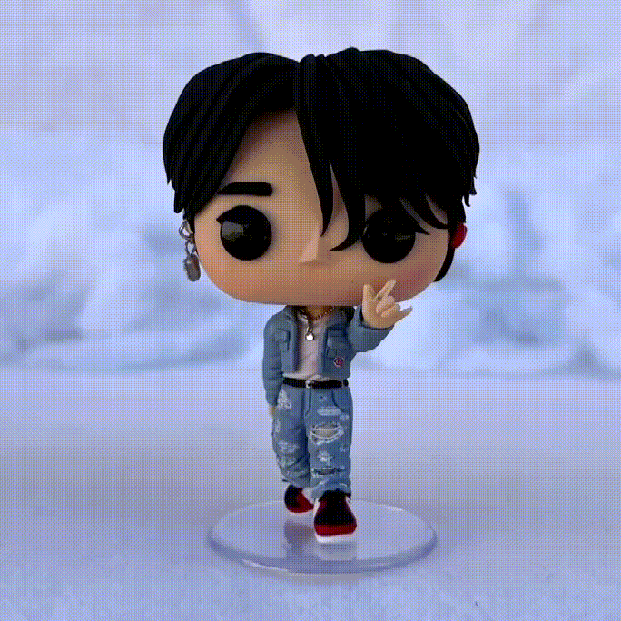
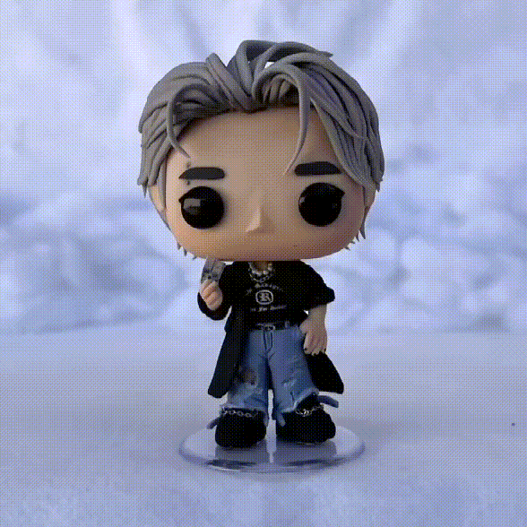
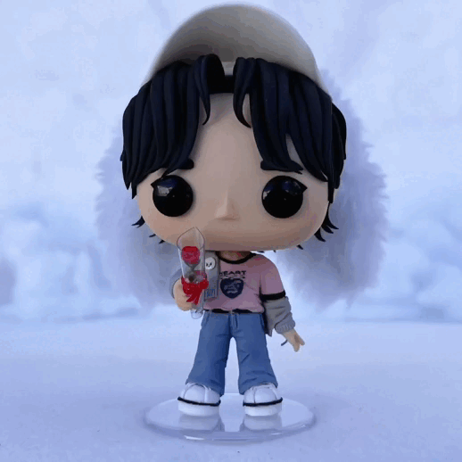
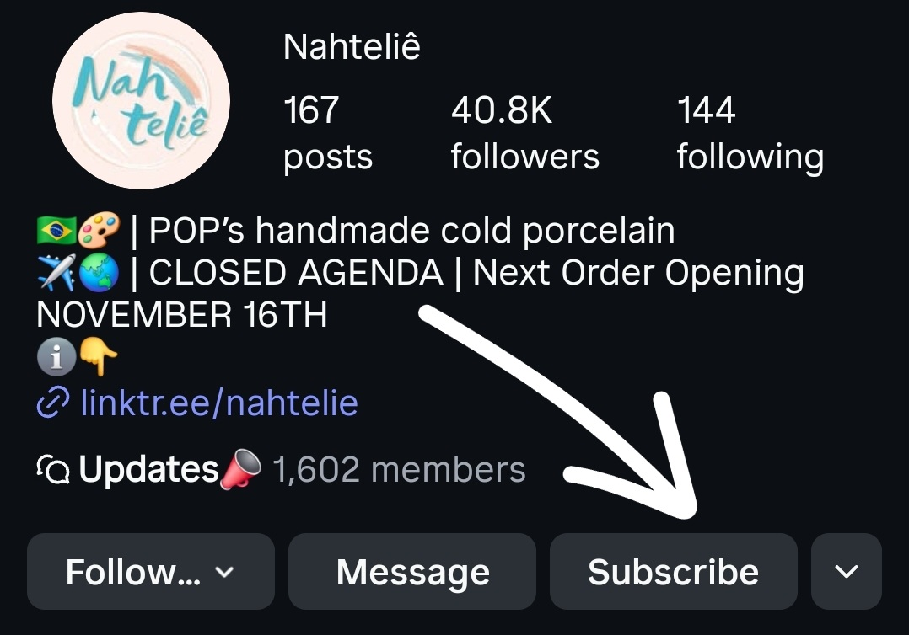

How To Order?
Currently are 40 POPs/Vacancies per opening and only for subscribers. These are divided into two ways, these are as follows:
Waiting list for those without a POP.
Every subscriber who has never had a chance to order is part of the Subscriber Waitlist. Each agenda the 24 subs who are at the front will be offered a chance to get a POP. If for whatever reason you are not in a position to say yes (or you miss the message!), you will maintain your queue position for the next agenda to be offered again. You can view your queue position here: Waiting List
Subscriber Raffle.
Everyone who is a subscriber is entered into a raffle. We will draw SUBS at random and 16 who are drawn will be offered the chance for a POP, this is done on an Instagram Live if you wish to view along! If you do not wish to say yes at this time, I will offer the spot to the next in the Waiting List. You can view you raffle draw number here: Subscribers IDs
Information
The 40 vacancies will be divided into 4 batchs of 10 pops -
production time for each batch is 35-50 days (totaling 5-
7 months)
Prices
The prices for each Pop start from $75 and increase
depending on details, accessories and materials used
example of values:

$75
simple clothes and few accessories

$80
more elaborate clothes and hair,
and accessories

$85
hat, accessories and
more complex clothes
Payment Information
- Payment is accepted via PayPal.
-
Payment will only be made at the end of
production
, we will contact you to finalize and you will
have up to 2 days to make the payment, if not, the
Pop will be available for sell to another customer.
- The amount can be converted to your country's currency
at the time of the payment (ex: US$80 = €68,77)
- Shipping estimate: US$50 - US$52 (depends on country | asia: $68)
+ US$4 fee on top of shipping (paypal tax)
- Unfortunately some countries are not available for shipments 😞
Info Subs
How to Sub?
It's available on my Instagram, worth US$1.99 (price may change depending on your country) Link to Instagram

Subs Discount
From now on, the discount will be based on how long you’ve been a sub! 💛
For each month you stay subscribed, you’ll earn $1 in discount, up to a maximum of $18.
(After you get your POP, the discount counter resets and starts counting again from the month you got your slot.) 🔁
So for example,
If you’ve been a sub for 15 months and finally get your spot, you’ll automatically get $15 off your POP!
It’s a little thank-you for all the amazing support and patience you’ve shown while waiting 🥰
Infos
When can I order one?
I takes orders when the previous set of POPs have been made and shipped; so there is not fixed timescale. The date is on Instagram bio
How do I make my order?
Once you have secured a spot, I will be in touch to get specifications. Please have this ready before the vacancy opening if possible. I will need the details of the member you want, along with outfit details. This can be given via links to videos where they wore the outfit in question. Screenshots are also ideal, presented in a pdf document. Please show the hairstyle, jewellery, clothes and shoes. If you can find links to the actual clothes, please provide those. You will also need to advise on what pose you wish for the POP to be made in.
Alternatively, if I have already made the POP you want, you can just inform me which one it is, and any pose amendments you desire.
A good example of what to supply is attached. Notes, different views, all help. Remember, I want to make the POP you want; so provide me with as much detail as you can to help with that. Here an Example
How long does it take to receive my POP?
From the Opening, I will take some orders from each avenue and make them. For example, 6 from subscriber waitlist and 4 from raffle. You can look up the sequence for orders Here. Depending on your place, it can take a few months from Opening to your POP going into production. Reminder, these are all handmade by one person. Patience is requested! ❤️
After getting a POP does my name go to the back of the Subscriber Queue?
Unfortunately not. Once you have a POP your name is removed from the subscriber queue, it isn’t put to the back of it or anything. This is because there can always be new subscribers and the queue is for people who have never had a POP.
Is there a limit to the number of POPs I can have?
No, you can have as many as you want/are able to get. However, per opening you are only able to obtain one.
Other Infos
- WE DO NOT MAKE POP'S WITH REFERENCES FROM OTHER ARTISANS
- At the moment I only accepting orders for Stray Kids Pops
- We don't make pets
- The pops measure 10-12cm and are made of cold porcelain.
Please don’t hesitate to reach out if you have any questions.
If a question becomes common, I’ll add it here to help others in the future.
Most importantly, please remember to be patient and kind.
All of my work is handmade, it takes time, care, and attention to detail.
I understand that waiting for a limited item can be frustrating,
but please remember that we’re all part of the same community.
For me, this is not only a business, but also a passion and hobby❤️.